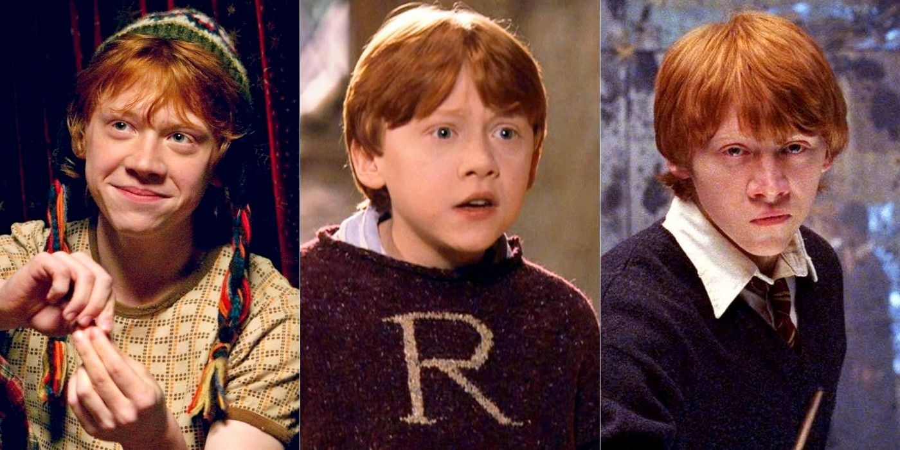

Personajes
Harry Potter

En su undécimo cumpleaños se entera de que es un mago y la trama de los libros se centra principalmente en los años en los que el huérfano Potter concurre al Colegio Hogwarts de Magia y Hechicería para practicar bajo la guía del director Albus Dumbledore y demás profesores. Allí, Harry también descubre que ya es famoso en todo el mundo mágico y que su destino está atado al de Lord Voldemort, el mago tenebroso mundialmente temido y asesino de su madre y su padre.
Hermione Granger

Aparece en la primera novela, Harry Potter y la piedra filosofal, como una nueva estudiante en su camino a Hogwarts. Después de que Harry y Ron la salvaron de un troll de montaña en los baños de las chicas, se formó una estrecha amistad entre ellos y con frecuencia usa su ingenio rápido, y conocimiento enciclopédico para ayudarlos. Rowling ha declarado que Hermione se asemeja a ella a una edad más joven, con su inseguridad y miedo al fracaso. Su papel es bastante determinante ya que, al tener buenas aptitudes de estudio, se la podría considerar como la "cerebro" del grupo, siendo incluso la consejera de su amigo Harry Potter en su liderazgo del Ejército de Dumbledore. Hermione es la chica más inteligente de su curso en el Colegio Hogwarts de Magia y Hechicería. Al igual que Harry y Ron pertenece a la casa de Gryffindor, pese a que el sombrero seleccionador consideró colocarla en Ravenclaw debido a sus prominentes capacidades intelectuales. Es de origen muggle: sus padres son ambos dentistas y no tienen ninguna relación con el mundo de los magos. Le encanta leer, sin embargo, no sabe dibujar. No le gusta romper las reglas salvo por alguna emergencia y no es especialmente entusiasta del quidditch, el deporte mágico, aunque apoya a sus amigos durante el campeonato. Tiende a creer que todo aquello que merece la pena saber se puede aprender de un libro y es escéptica respecto a todo lo que no se pueda comprobar con ciencia, despreciando, por tanto, la asignatura de adivinación impartida por la profesora Sybill Trelawney. Hermione conoció a Harry Potter y a Ron Weasley en el Expreso de Hogwarts.
Ron Weasley
Es el sexto de los siete hijos de los Weasley. Es hijo de Arthur y Molly Weasley y hermano de Bill, Charlie, Percy, los gemelos Fred y George y la pequeña Ginny. Su padre trabaja en el Ministerio de Magia, mientras que su madre es ama de casa. Bill trabaja para el banco de magos en Egipto y Charlie cría dragones en Rumanía. Percy es asistente del ministro de magia y los gemelos acaban abriendo la tienda de bromas Sortilegios Weasley. Por último, su hermana pequeña Ginny acaba siendo la capitana del equipo de Quidditch Las Arpías de Holyhead. Pobres, pero honrados, los hermanos Weasley siempre han adquirido cosas de segunda mano, a pesar de que la tía Muriel está muy bien económicamente, pues posee una mansión en la que acaban escondiéndose de Voldemort y sus secuaces. Los abuelos paternos son Septimus Weasley y Cedrella Black, mientras que los maternos son Ignatius Prewett y Lucretia Black. Casado con su amiga Hermione, el matrimonio tiene dos hijos: Rose y Hugo Granger-Weasley.